Next: Software Up: Frequency representation of signals Previous: Continuous time and frequency Contents
The signal  is discrete whereas the resulting frequency
spectrum is considered as continuous (arbitrary signals).
is discrete whereas the resulting frequency
spectrum is considered as continuous (arbitrary signals).
 (37)
(37)
 |
 |
 |
(38) |
|
 |
(39) |
 is the normalised frequency.
is the normalised frequency.
 from a continuous signal 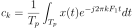. We want
to know how the spectrum 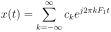 of the discrete signal looks like.
so that
we can equate the Fourier transforms of the sampled spectrum and
of the analogue spectrum .
Obviously
from a continuous signal 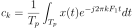. We want
to know how the spectrum 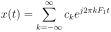 of the discrete signal looks like.
so that
we can equate the Fourier transforms of the sampled spectrum and
of the analogue spectrum .
Obviously  must be different to accommodate the different integration
ranges. The trick is now to divide the integral on the right hand side
of Eq. 41
into chunks to make it compatible to the range on the left hand
hand side.
must be different to accommodate the different integration
ranges. The trick is now to divide the integral on the right hand side
of Eq. 41
into chunks to make it compatible to the range on the left hand
hand side.
Remember that the normalised frequency is 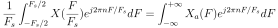 which allows us to change the integration to analogue frequency on both sides:
and now we divide the right hand side into chunks of which corresponds to the integration range on the left hand side. |
|
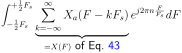 | (43) |
|
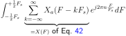 | (44) | |
|
(45) |
| 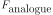 | |
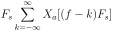 | (46) |
| 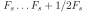 | |
![$\displaystyle F_s \sum_{k=-\infty}^{\infty} X_a[(f-k)F_s]$](img134.svg) |
(47) |
and place these copies at multiples of the sampling rate
(see Fig. 5). This illustrates also the
sampling theorem: if the bandwidth of the spectrum is wider
than 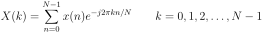 then the copies of the analogue spectrum will overlap and
reconstruction would be impossible. This is called aliasing. Note that
it is not necessary bad that the spectrum of the analogue signal lies
within the range of the so called “base band”
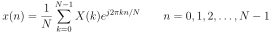. It
can also lie in another frequency range further up, for example
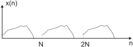 as long as the
bandwidth does not exceed . If it is placed further up
it will automatically show up in the baseband
which
is called “fold down”. This can be used for our purposes if we
want to down mix a signal.
![\includegraphics[width=\textwidth]{fold_down}](img138.svg)
|
With the insight from these equations we can create
a plot of how analogue frequencies map onto sampled frequencies.
Fig 6 shows how the analogue frequencies
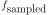
map on the normalised frequencies
 .
As long as the analogue frequencies are below the mapping
is as usual as shown in Fig 6A.
Between and we have an inverse mapping:
an increase in analogue frequency causes a decrease in frequencies.
Then, from we have again an increase in frequencies starting
from DC. So,
in general if we keep a bandlimited signal within one of these
slopes (for example from
as
shown in Fig 6B) then we can
reproduce the signal.
.
As long as the analogue frequencies are below the mapping
is as usual as shown in Fig 6A.
Between and we have an inverse mapping:
an increase in analogue frequency causes a decrease in frequencies.
Then, from we have again an increase in frequencies starting
from DC. So,
in general if we keep a bandlimited signal within one of these
slopes (for example from
as
shown in Fig 6B) then we can
reproduce the signal.
This leads us to the generalised Nyquist theorem: if a bandpass filtered signal has a bandwidth of 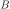 then the minimum sampling frequency is 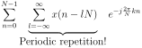.
The discrete Fourier Transform (DFT) is defined as:
where is the number of samples in both the time and frequency domain.
is the number of samples in both the time and frequency domain.
The inverse discrete Fourier Transform (IDFT) is defined as:
|
|
What is the effect in the timedomain of this discretisation3? We start with the continuous Fourier transform and discretise it into N samples in the frequency domain:
Let's subdivide the sum into chunks of length :
| 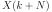 | |
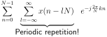 | (51) |
|
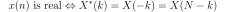 | (52) | |
|
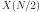 | (53) |
We note the following:
in the inverse transform.
However, for operations which shift signals in the frequency domain
it is important to remember that we shift a periodic time series. If
we shift it out at the end of the array we will get it back at the
start of the array.
|
|
 . The mirroring occurs because the input signal
is real. This is important if one wants to modify the
spectrum by hand, for example to eliminate 50Hz noise. One
needs to zero two elements of to zero. This is illustrated
in this python code:
. The mirroring occurs because the input signal
is real. This is important if one wants to modify the
spectrum by hand, for example to eliminate 50Hz noise. One
needs to zero two elements of to zero. This is illustrated
in this python code:
import scipy as sp yf=sp.fft(y) # the sampling rate is 1kHz. We've got 2000 samples. # midpoint at the ifft is 1000 which corresponds to 500Hz # So, 100 corresponds to 50Hz yf[99:101+1]=0; # and the mirror yf[1899:1901+1]=0; # yi=sp.ifft(yf);This filters out the 50Hz hum from the signal
 with sampling rate
1000Hz. The signal yi should be real valued again or contain
only very small complex numbers due to numerical errors.
with sampling rate
1000Hz. The signal yi should be real valued again or contain
only very small complex numbers due to numerical errors.
 |
|
|
(54) |
 |
|
 |
(55) |
real:
 (56)
(56)
 by hand.
by hand.
|
 |
|
(57) |
 |
|
 |
(58) |
 (59)
(59)
 samples
from the signal .
samples
from the signal .
To illustrate the effect of this finite sequence we introduce a sine
wave
 which has just two peaks in a proper
Fourier spectrum at 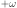 and 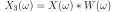.
which has just two peaks in a proper
Fourier spectrum at 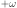 and 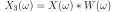.
The spectrum of the rectangular window with the width is:
The resulting spectrum is then:
Because the spectrum of 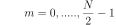 consists of just two delta functions the spectrum 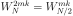 contains the window spectrum 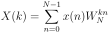 twice at and (see Fig. 9). This is called leakage. Solutions to solve the leakage problem? Use Windows with a narrower spectrum and with less ripples (see FIR filters).
We can rewrite the DFT (Eq. 48) in a slightly more compact form:
with the constant: The problem with the DFT is that it needs 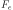 multiplications. How can we reduce the number of multiplications? Idea: Let's divide the DFT in an odd and an even sequence:| (66) | |||
| 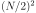 |  |
(67) |
|
|
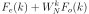 | (68) |
|
(69) | ||
|
 |
(70) |
 multiplication, so in total
.
Basically by dividing the sequence in even and odd parts we can reduce
the number of multiplications by 2. Obviously, the next step is then
to subdivide the two sequences 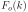 and 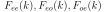 even further
into something like
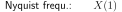 and
multiplication, so in total
.
Basically by dividing the sequence in even and odd parts we can reduce
the number of multiplications by 2. Obviously, the next step is then
to subdivide the two sequences 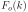 and 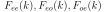 even further
into something like
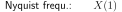 and  .
.
|
|
In general the recipe for the calculation of the FFT is:
is the phase factor in front of the odd sequence. This is continued until we have only two point () DFTs (see Eq. 64): which are just sign
inversions or swaps of real and imaginary parts. A clever
implementation of this algorithm will be even faster.
which are just sign
inversions or swaps of real and imaginary parts. A clever
implementation of this algorithm will be even faster.
In summary the idea behind the FFT algorithms is to divide the sequence into subsequences. Here we have presented the most popular radix 2 algorithm. The radix 4 is even more efficient and there are also algorithms for divisions into prime numbers and other rather exotic divisions. However, the main idea is always the same: subsample the data in a clever way so that the final DFT becomes trivial.


 (
(